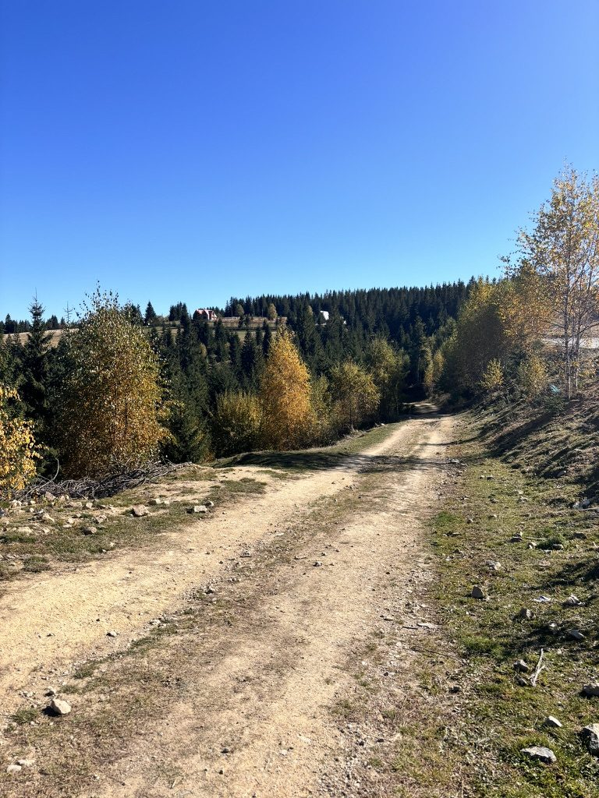
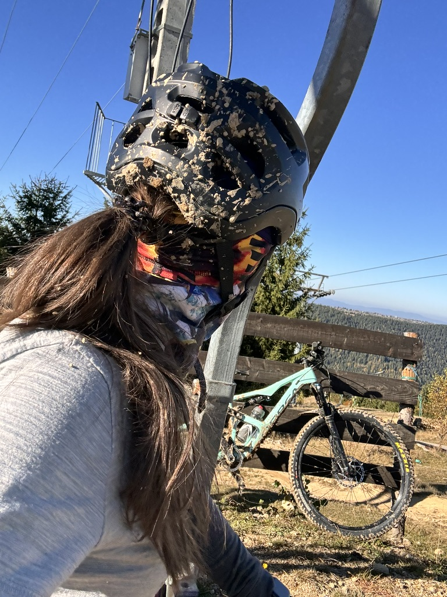
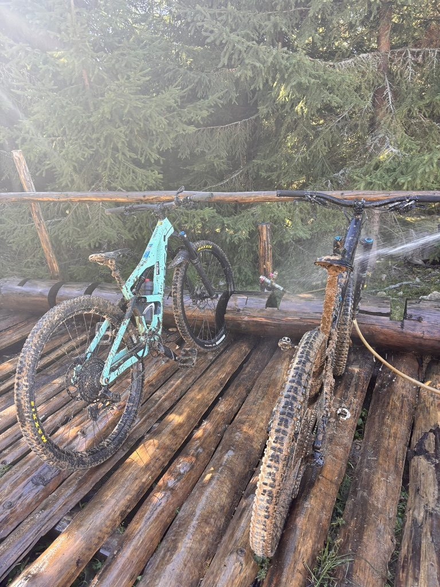

There is a version of mountain biking that looks good in photos — clean bike, clear trail, golden light, someone mid-air above a jump. And then there is what actually happens most of the time, which is that you go into a corner too fast, or the trail is wetter than it looked, and the ground comes up to meet you with an opinion.
Marisel is a small resort area about 40 kilometres from Cluj-Napoca, in the Apuseni Mountains. In winter it's a ski hill. In autumn — golden trees, dry dirt, then the sudden mud patch that was hiding in the shade all along — it becomes one of the best places near the city to ride downhill.

The trail before things got interesting.
I was on an Orbea — a mint-green full-suspension that I had borrowed and was already regretting having to give back. There is something about a good MTB that rewards commitment. If you go timid, the bike punishes you. If you commit to the line and let it run, it's effortless. The problem is finding the line between commitment and overconfidence, which is essentially what downhill MTB is teaching you every single time.
The mud
Autumn trails near Cluj are generous until they are not. A section that's packed dirt on the way up becomes something else entirely on the descent — especially where the trees close in and the sun hasn't reached all morning. We hit a section like that at speed.

The bike at the top. Already carrying evidence of the earlier section.
I don't remember the exact moment I went down. That's how it works — one second you're riding, the next second you're lying in the trail wondering what just happened, and there's a specific delay before the pain either arrives or doesn't. In this case it didn't. What arrived instead was mud. A lot of it.

The selfie. The helmet tells the whole story.
There is a particular quality to the laugh that comes after a crash where you're not hurt — relief, adrenaline, and the absurdity of your own face all arriving at once. You're not laughing because it was funny. You're laughing because you're alive and intact and completely filthy and nothing is actually wrong.
Cleaning the bikes
After the last run, we hosed the bikes down on a wooden platform at the base of the trail. Two Orbeas, both caked. The mud comes off in layers. You start with the tyres, then the drivetrain, then the frame — and slowly the mint green comes back through.

Post-ride ritual. The mist, the mud, the pine forest.
There is something meditative about cleaning a bike after a hard ride. Your body is coming down from the effort and the adrenaline, and the task requires just enough attention to slow your mind without demanding anything difficult from it. You go over every part. You find the scratches. You think about the corners.
The moment in the grass
Before the cleaning, before the drive back, I sat down in the grass with the bike beside me and just stayed there for a while.

I don't know how long I sat here. Long enough.
I wasn't thinking about anything specific. I was just looking at the bike and feeling grateful for the day — for the trails, for the fall I walked away from, for the mud on my helmet and the clean air and the fact that this is a thing I get to do.
MTB has a way of demanding your complete presence. You can't be distracted on a downhill trail. Your mind can't be somewhere else. There is only the trail, the bike, the next corner. For someone who spends a lot of time inside their own head, that forced emptiness is one of the most valuable things I've found.
I came back with half the trail on my face. I'd go back tomorrow.
If you want to ride Marisel
- About 40km from Cluj-Napoca, easily done as a day trip
- Chairlift runs in summer and autumn — you can shuttle up and ride down all day
- Trails range from flow tracks to more technical root-and-rock sections; good for intermediate riders upward
- Autumn is the best season — the colours and the air are worth the mud risk
- Check trail conditions before you go — the wet sections after rain are a different sport entirely
Riding downhill? Make sure you're covered.
Considering travel insurance for your trip? World Nomads offers coverage for more than 150 adventure activities — including mountain biking — as well as emergency medical, lost luggage, trip cancellation and more.
Get a Quote from World NomadsThis is an affiliate link — if you book through it, I may earn a small commission at no extra cost to you.